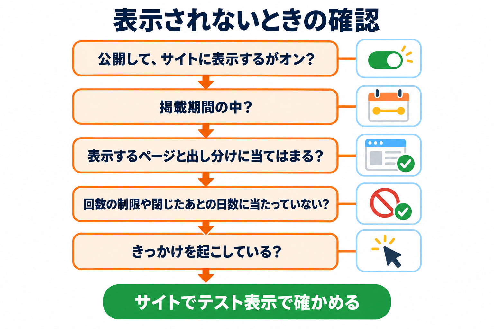

トラブルシューティング
よくある問題とその解決方法をまとめています。

表示に関すること
バナーが表示されない
原因: 公開していない・「サイトに表示する」がオフ・掲載期間の外・表示するページや出し分けに当てはまらない・回数の制限に当たっている・きっかけが起きていない、のどれかです。
バナー一覧の状態を見ます。「表示中」以外なら、札の意味（バナー一覧）に従って公開する・「表示する」を押す・掲載期間を見直します。
一覧の表示のタイミングに「表示されません」と出ていないか確かめます。出ていれば、その端末で使えるきっかけを選びます（例: PC だけで使う「マウスが上端から外に出たとき」しか選んでいないと、スマホでは表示されません）。
サイトでテスト表示で、表示のきっかけが起きるか確かめます。テスト表示で出るのに、ふつうに見ると出ないときは、回数の制限・ページ・出し分けのどれかが原因です。
一度表示されたあと、自分の画面で表示されなくなった
原因: 「表示する回数」と「閉じたあと ○ 日は表示しない」は、ブラウザごとに数えます。一度表示されたり閉じたりすると、その決まりの間は同じブラウザに表示されません。
確かめるだけなら、サイトでテスト表示を使います（回数の制限を無視します）。
ふつうの表示で確かめたいときは、ブラウザのプライベートウィンドウ（シークレットウィンドウ）で開きます。
ページを開いてすぐに表示されてしまう
原因: きっかけを何もチェックしていない（開いた直後の秒数がたつと表示されます）か、「○秒見たとき」の秒数が短い設定です。
表示のタイミングタブを開き、上部の要約の文を確かめます。
「マウスが画面の上端から外に出たとき」「上に戻るスクロールをしたとき」などのきっかけを選び、「開いた直後」の秒数を長くします。
表示されすぎる・うっかり出てしまう
原因: マウスを上へ動かしただけで反応している、または回数の制限がゆるい設定です。
表示のタイミングタブで感度を「低い」にするか、表示までの待ち時間を 0.3〜0.5 秒ほどにします。
回数・期間タブで表示する回数を「1回の訪問につき1回まで」や「1日1回まで」にし、閉じたあと ○ 日は表示しないを長くします。
「○％までスクロールしたとき」で表示されない
原因: スクロールできない短いページでは、このきっかけは起きません。また、すでに読んだ位置より上では起きません。
短いページでは、「○秒見たとき」など、ほかのきっかけを合わせて選びます。
出し分けや掲載期間が反映されない（ページキャッシュを使っているサイト）
原因: ページの表示を速くするために、ページをまるごと保存して使い回す仕組み（キャッシュのプラグインやサーバーの機能）があると、保存されたときの条件のまま表示されることがあります。
設定を変えたら、キャッシュを削除（クリア）します。
ログインの状態・流入元・参照元で出し分けたいページは、お使いのキャッシュの設定で、キャッシュの対象から外せないか確かめます。
テスト表示に関すること
テスト表示を押しても、左下の箱が出ない
原因: ログインしていない、そのバナーを編集できる権限がない、またはリンクの有効期限が切れています。この場合はふつうのページとして開きます。
編集画面を開き直してから、もう一度「サイトでテスト表示」を押します。
別のブラウザや端末で開くときは、そのブラウザで WordPress にログインしてから押します。
テスト表示で「直前のきっかけ：マウスの移動が少ないため見送り」と出る
原因: ページを開いてから、マウスをあまり動かしていません。
ページの上でマウスを少し動かしてから、もう一度マウスを画面の上端から外に出します。
集計に関すること
集計が 0 のまま増えない
原因: 計測がオフ、「同意した人だけ記録する」で同意の Cookie がない（または名前が空）、トラッキング拒否の人だけが見ている、のどれかです。テスト表示とプレビューは記録しません。
設定タブで「計測」にチェックが入っているか確かめます。
「同意した人だけ記録する」を選んでいるなら、Cookie の名前が正しいか、同意バナーで同意したあとに見ているかを確かめます。
自分のブラウザでトラッキング拒否を有効にしていないか確かめます。
成果が数えられない
原因: 成果ページの指定がそのページの URL と一致していない、訪問者が同じブラウザでバナーを見て（またはクリックして）いない、バナーが停止中、計測が許されていない、のどれかです。成果はバナーごと・ブラウザごとに1回だけ数えます。
成果・A/Bテストタブの成果ページの書き方を確かめます（例: 完了ページの URL が /thanks/ なら /thanks/）。
バナーが「表示中」か確かめます（停止中のバナーの成果は数えません）。
同じブラウザで、バナーを表示させてから成果ページを開いて確かめます。
A/B テストで、いつも同じパターンが出る
原因: 1人の訪問者には、最初に割り当てたパターンをずっと表示します。
自分で両方を見るときは、編集画面のプレビューの「A / B」で切り替えます。
ブラウザのプライベートウィンドウで開くと、改めて割り当てられます。
毎日のログの削除が行われていない
原因: WordPress の予定の処理は、サイトが見られたときに動きます。見られる回数が少ないサイトでは、遅れることがあります。
しばらく待つか、サイトのページを開いてから確かめます。
すぐに消したいときは、集計タブの「すべてのログを削除」を使います（すべてのログが消えます）。
編集・設定に関すること
投稿・固定ページの検索で目的のページが出てこない
原因: 検索できるのは「投稿」と「固定ページ」だけです。非公開・予約中の記事は、読める権限のある人にだけ出ます。
それ以外の種類のページは、「URL・パス」の欄に URL を書いて指定します。
投稿・固定ページの検索で「見つかりませんでした」が続く
原因: 一致するページがないか、通信がうまくいっていません（長い間画面を開いたままにしてログインが切れた、など）。
別の言葉で検索します。
ページを読み込み直し、ログインが切れていればログインし直してから検索します。
「読み込めませんでした。このプラグインで書き出したファイルを選んでください。」と出る
原因: 選んだファイルがこのプラグインで書き出したものではないか、5MB を超えています。
設定タブの「ファイルをダウンロード」で書き出したファイルを選び直します。
読み込んだバナーの画像が表示されない
原因: 読み込んだバナーは、書き出し元のサイトの画像の URL を使います。書き出し元の画像が消えていると表示されません。
内容タブの「画像を選ぶ」で、このサイトの画像を選び直して保存します。
設定を保存したら「保存しました。ただし Cookie の名前が空のため、だれも記録されません。」と出た
原因: 「同意した人だけ記録する」を選び、Cookie の名前を空のまま保存しました。
Cookie の名前を入れて保存し直すか、「同意を確認せずに記録する」に戻します。
動作要件
| 項目 | 要件 |
|---|---|
| WordPress | 6.0 以上 |
| PHP | 7.4 以上 |
| ブラウザ（訪問者） | 現在の主なブラウザ（Chrome・Edge・Firefox・Safari） |
| 権限 | バナーの作成・編集は投稿を書ける権限、集計と設定は管理者 |
動作要件と制限
- 回数の制限・閉じたあとの日数・A/B テストのパターンは、訪問者のブラウザに記録して守ります。ブラウザの記録を許していない環境では、回数の制限が効かず、表示が多くなることがあります。
- 1つのページで表示するバナーは1つだけです。
- 集計で選べる期間は、直近 7 日・30 日・90 日です。
- 書き出しファイルの読み込みは 5MB までです。
- プラグインを削除すると、すべてのバナー・設定・ログが削除されます。